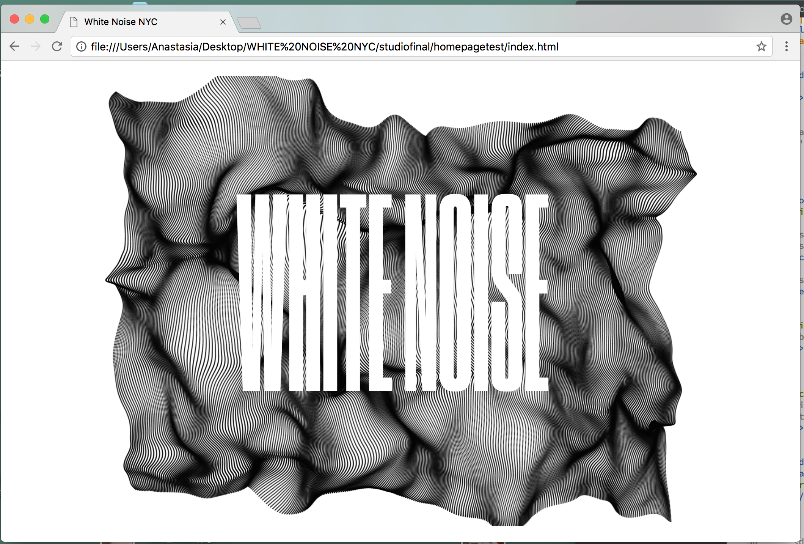
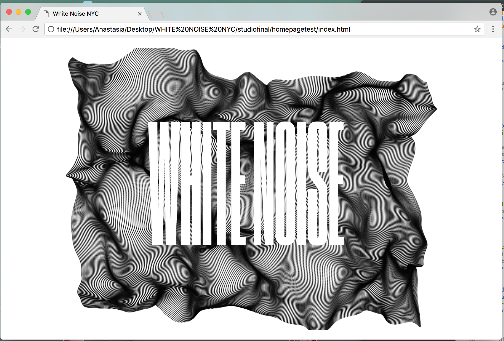

BLOG ENTRY #7
Today's focus was on fixing up the appearance of the home page. This is important as it is the first page that the viewer gets to interact with, and thus, forming the user's first impression of the site. Consequently, we decided with the brand members and designers to shift focus on the main home page and create a modern, moving design that grips the user's attention.
The screenshots below show the process of making a background video on Adobe AfterEffects. The brand members decided that they wanted a fairly simple, black and white 'simulation'-type of design where a digital, visually captivating shape is formed from a mixture of thousands of dots forming some sort of geometric pattern.
These would be added to either the naviation page, or in the home page, behind the logo that I suggested to the brand using the 'Druk' typeface, a very contemporary and actually quite popular and trendy typeface used in several advertisements and posters today. The image below shows an attempt to work with the Druk font logo of White Noise, moving around and being distorted by the Liquify tool.

We decided that a design that would encapture movement through these geometric patterns could be like a simulation of a terrain, a wave, a cloth, smoke, etc. Therefore, I started attempting to make simulations on AfterEffects using Effects that are either pre-set in AfterEffects or are downloaded plug-ins called 'Trapcode' and 'Stardust'.
These give you the possibility to start with a minimal number of particles, forming a simple effect like the one below. Hence, as you add thousand of particles and start experimenting using the X-particles, Y-particles, and Z-particles, the design slowly takes form into a complex geometric design that is visually aesthetic enough for the home page.
The following collection of images exhibits the development of the simulation design for several prototypes that I created to present to the brand members:
As noticed when comparing the two, the primary look of each pattern looks basic and always starts with either lines or dots forming together.


For instance, the simulation above started with a simple grid of dots, but became more complex when I experimented by adding several particles to X and Y, and of course, Z to add more panels and a more intricate pattern. After making the pattern more complex, it was animated to move on either the X,Y or Z-Rotation, whilst other characteristics such as speed and size were also manipulated.


Similarly, the one above started with a simple number of particles being animated using the Stardust plug-in. This gave me the possibility to animate the dots coming outwards from the center of the page using the 'Emitter'. After adding several particles per second to the X, Y and Z origins, and experimenting with other factors such as offset, F-scale, and speed, a final energy wave simulation was formed.


Lastly, these two simulations start by forming a pattern to eventually fill the page with either a Kaleidoscope effect, or with the Wave effect. These were both created using the 'Trapcode' plug-in, which is necessary for geometrically-aligned simulations such as these. By experimenting with several effects and manipulating their form within the 'Fractal Field' bar, through the 'Displace' and 'Flow Evolution', and others to affect movement and create a 'folding' effect within the particules.
Finally, it was time to start exporting the simulations from AfterEffects and start using them as a background for the website. The images below show the logo (made using the Druk typeface), being placed ontop of the animation in the website.


We concluded that the iteration above of a wave simulation was the most successful one in terms of complexity, texture, color and overall aesthetic design. On one hand, it is not too complex so that the rest of the content on the website will be dissolved, but it is also an eye-catching and modern animation that will hopefully grab the user's attention when visiting the page.


The images above show my attempt to add the simulations into the website, using a minimal, white-on-black design, as requested by the brand members. The collection of three images shows how the animation starts from a simple line and then slowly starts to form on the whole page.
This design choice was used for the animation because I was considering to add emphasis to the user experience by making the page initially seem all black, by making all the text and background black in css, but as the user is confused with the lack of content on the page, the simulation immediately starts to load, creating an effect were the content of the page slowly appears. Hopefully, this appearing effect and the simulation of the wave itself, will excite the viewer enough to continue exploring the website.
 

Finally, these show the final iterations used for the home and navigation pages. The design of the last image will be used for the home page, so it will be the user's first interaction with the website. Again, when the viewer first loads the page, nothing will be visible, but 2 seconds later the wave simulation will start running behind the white text and it will slowly become visible. Hopefully, this will make the user scroll towards the writing, because it is the button that will take them to the navigation page and then, the online shop.